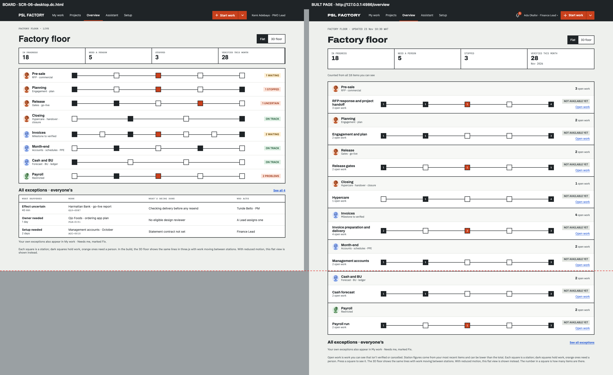
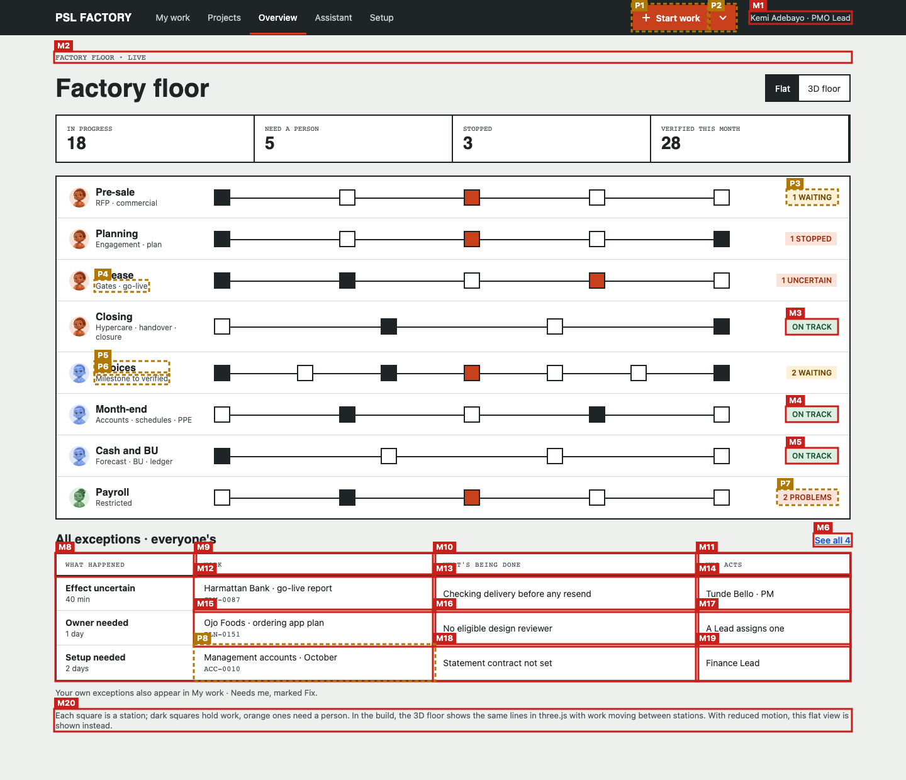
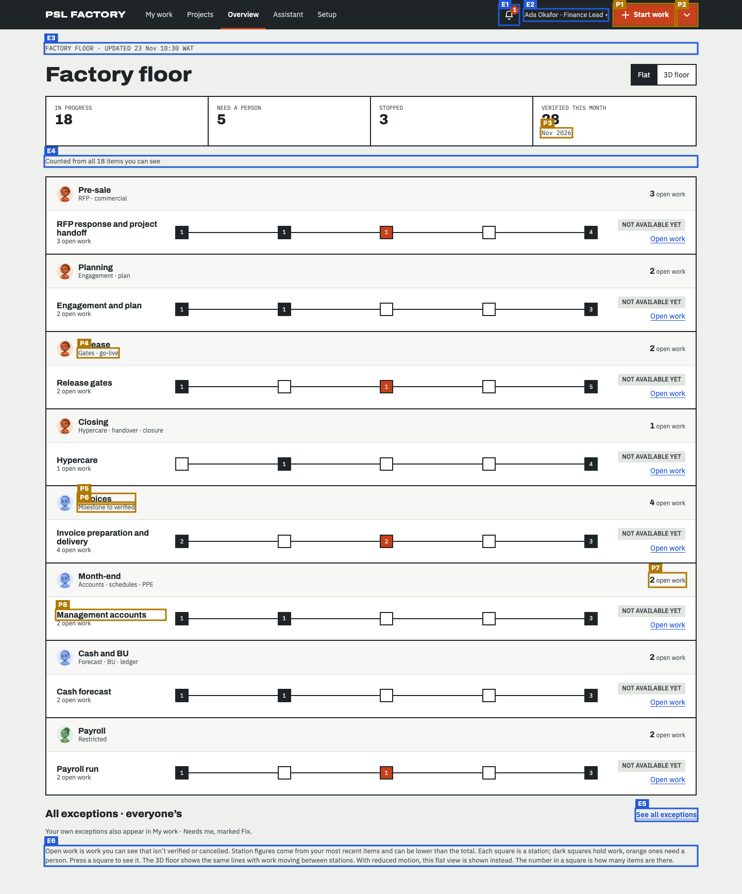
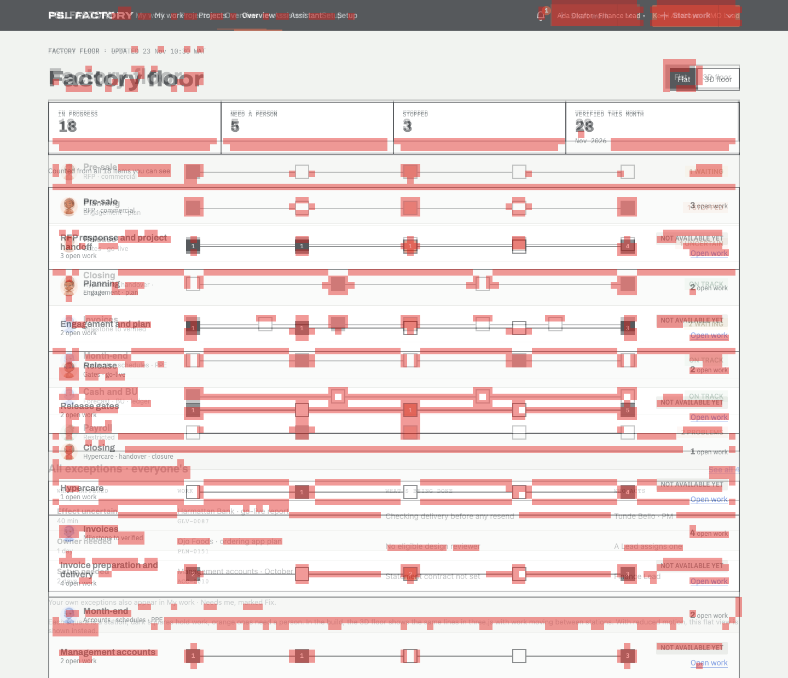

Does the built page follow the design?
Board SCR-06-desktop.dc.html compared with http://127.0.0.1:4986/overview at 1440px wide · 2026-11-24T15:37:43.796Z
- 1 board item(s) are missing from the page and are not approved exceptions (coverage 98.5% with exceptions, needs 100%).
- Visual match 78.2 is below 90.
- 8 item(s) are in a different place; review them (not part of the pass rule unless --strict-position).
45 of 65 things drawn on the board were found on the page: headings, buttons, links, search and filter controls, table columns, labels and the repeated rows (counted once, not per row).
How closely the shapes line up: blocks, bars, tables and text areas, compared in 12px squares over the top 1240px. Different words in the same place still count as a match, so sample data does not lower the score.
Missing from the built page 20
Drawn on the board but not found on the page. Each one must be built, or approved as an exception.
| # | What | Text on the board | Where on the board | Exception |
|---|---|---|---|---|
| M1 | Text | Kemi Adebayo · PMO Lead | right, 20px down | approved Frame item: signed-in person from /me (the mock persona is Ada Okafor · Finance Lead). · carried unchanged from F-08/fidelity-exceptions.json (coordinator (overnight, provisional — see delivery/OVERNIGHT-DECISIONS.md D-18)); not an F-65 change |
| M2 | Text | FACTORY FLOOR · LIVE | middle, 84px down | approved The page polls every 15 s and AGENTS.md asks for explicit timestamps, so it reads 'FACTORY FLOOR · UPDATED <as_of> WAT'. · carried from F-08 (requested there; not part of the D-182/D-187 answers) |
| M3 | Text | ON TRACK | right, 509px down | approved Row tag: no read supplies a line's status (GET /overview has only key, title and total; GET /work/counts has no status), so the tag reads a neutral "Not available yet" instead of the drawn status word (D-182 Q3; D-187 Q8 keeps it neutral). · design engineer, D-182/D-187 |
| M4 | Text | ON TRACK | right, 648px down | approved Row tag: no read supplies a line's status (GET /overview has only key, title and total; GET /work/counts has no status), so the tag reads a neutral "Not available yet" instead of the drawn status word (D-182 Q3; D-187 Q8 keeps it neutral). · design engineer, D-182/D-187 |
| M5 | Text | ON TRACK | right, 714px down | approved Row tag: no read supplies a line's status (GET /overview has only key, title and total; GET /work/counts has no status), so the tag reads a neutral "Not available yet" instead of the drawn status word (D-182 Q3; D-187 Q8 keeps it neutral). · design engineer, D-182/D-187 |
| M6 | Link | See all 4 | right, 850px down | approved REQUEST: the count needs E-EXCEPTIONS, out of F-08 scope (follow-up (a) after F-06). The link reads 'See all exceptions'. · carried unchanged from F-08/fidelity-exceptions.json (coordinator (overnight, provisional — see delivery/OVERNIGHT-DECISIONS.md D-18)); not an F-65 change |
| M7 | Table | (table) | middle, 881px down | approved REQUEST: the exceptions table is F-06's ExceptionsList, mounted by follow-up (a); F-08 must not fetch E-EXCEPTIONS. · carried unchanged from F-08/fidelity-exceptions.json (coordinator (overnight, provisional — see delivery/OVERNIGHT-DECISIONS.md D-18)); not an F-65 change |
| M8 | Table column | WHAT HAPPENED | left, 881px down | approved REQUEST: part of the F-06 exceptions table (follow-up (a)). · carried unchanged from F-08/fidelity-exceptions.json (coordinator (overnight, provisional — see delivery/OVERNIGHT-DECISIONS.md D-18)); not an F-65 change |
| M9 | Table column | WORK | left, 881px down | approved REQUEST: part of the F-06 exceptions table (follow-up (a)). · carried unchanged from F-08/fidelity-exceptions.json (coordinator (overnight, provisional — see delivery/OVERNIGHT-DECISIONS.md D-18)); not an F-65 change |
| M10 | Table column | WHAT'S BEING DONE | middle, 881px down | approved REQUEST: part of the F-06 exceptions table (follow-up (a)). · carried unchanged from F-08/fidelity-exceptions.json (coordinator (overnight, provisional — see delivery/OVERNIGHT-DECISIONS.md D-18)); not an F-65 change |
| M11 | Table column | WHO ACTS | right, 881px down | approved REQUEST: part of the F-06 exceptions table (follow-up (a)). · carried unchanged from F-08/fidelity-exceptions.json (coordinator (overnight, provisional — see delivery/OVERNIGHT-DECISIONS.md D-18)); not an F-65 change |
| M12 | Text | Harmattan Bank · go-live report GLV-0087 | left, 915px down | approved REQUEST: F-06 exceptions table row (follow-up (a)). · carried unchanged from F-08/fidelity-exceptions.json (coordinator (overnight, provisional — see delivery/OVERNIGHT-DECISIONS.md D-18)); not an F-65 change |
| M13 | Text | Checking delivery before any resend | middle, 915px down | approved REQUEST: F-06 exceptions table row (follow-up (a)). · carried unchanged from F-08/fidelity-exceptions.json (coordinator (overnight, provisional — see delivery/OVERNIGHT-DECISIONS.md D-18)); not an F-65 change |
| M14 | Text | Tunde Bello · PM | right, 915px down | approved REQUEST: F-06 exceptions table row (follow-up (a)). · carried unchanged from F-08/fidelity-exceptions.json (coordinator (overnight, provisional — see delivery/OVERNIGHT-DECISIONS.md D-18)); not an F-65 change |
| M15 | Text | Ojo Foods · ordering app plan PLN-0151 | left, 971px down | approved REQUEST: F-06 exceptions table row (follow-up (a)). · carried unchanged from F-08/fidelity-exceptions.json (coordinator (overnight, provisional — see delivery/OVERNIGHT-DECISIONS.md D-18)); not an F-65 change |
| M16 | Text | No eligible design reviewer | middle, 971px down | approved REQUEST: F-06 exceptions table row (follow-up (a)). · carried unchanged from F-08/fidelity-exceptions.json (coordinator (overnight, provisional — see delivery/OVERNIGHT-DECISIONS.md D-18)); not an F-65 change |
| M17 | Text | A Lead assigns one | right, 971px down | approved REQUEST: F-06 exceptions table row (follow-up (a)). · carried unchanged from F-08/fidelity-exceptions.json (coordinator (overnight, provisional — see delivery/OVERNIGHT-DECISIONS.md D-18)); not an F-65 change |
| M18 | Text | Statement contract not set | middle, 1026px down | approved REQUEST: F-06 exceptions table row (follow-up (a)). · carried unchanged from F-08/fidelity-exceptions.json (coordinator (overnight, provisional — see delivery/OVERNIGHT-DECISIONS.md D-18)); not an F-65 change |
| M19 | Text | Finance Lead | right, 1026px down | approved REQUEST: F-06 exceptions table row (follow-up (a)). · carried unchanged from F-08/fidelity-exceptions.json (coordinator (overnight, provisional — see delivery/OVERNIGHT-DECISIONS.md D-18)); not an F-65 change |
| M20 | Text | Each square is a station; dark squares hold work, orange ones need a person. In the build, the 3D floor shows the same lines in three.js with work moving between stations. With reduced motion, this fl | middle, 1129px down | — |
In a different place 8
Found on both, but in a different order, side of the page, or area (for example inside the table frame instead of above it).
| # | What | How it moved |
|---|---|---|
| P1 | Link Start work |
|
| P2 | Link More ways to start |
|
| P3 | Text 1 WAITING |
|
| P4 | Text Gates · go-live |
|
| P5 | Text Invoices |
|
| P6 | Text Milestone to verified |
|
| P7 | Text 2 PROBLEMS |
|
| P8 | Text Management accounts · October ACC-0010 |
|
Looks different 10
Found on both, but styled differently: table rows and cells, fonts, colours, underlines, outlines, corners. Not part of the score; check each one against the board.
| What | Difference |
|---|---|
| Link "Start work" |
|
| Link "More ways to start" |
|
| Text "Flat" |
|
| Text "3D floor" |
|
| Text "1 WAITING" |
|
| Text "1 STOPPED" |
|
| Text "1 UNCERTAIN" |
|
| Text "2 WAITING" |
|
| Text "2 PROBLEMS" |
|
| Text "Management accounts · October ACC-0010" |
|
On the page but not on the board 6
Built but not drawn. Some are expected (data, status lines); the rest need the design engineer to approve or remove them.
| # | What | Text on the page | Where on the page |
|---|---|---|---|
| E1 | Button | Alerts, 1 unread | right, 11px down |
| E2 | Button | Account menu: Ada Okafor · Finance Lead | right, 19px down |
| E3 | Text | FACTORY FLOOR · UPDATED 23 Nov 10:30 WAT | middle, 85px down |
| E4 | Text | Counted from all 18 items you can see | middle, 304px down |
| E5 | Link | See all exceptions | right, 1570px down |
| E6 | Text | Open work is work you can see that isn’t verified or cancelled. Station figures come from your most recent items and can be lower than the total. Each square is a station; dark squares hold work, oran | middle, 1642px down |
Pictures
The red dashed line on the side-by-side marks how far down the visual score looks. On the marked board, red boxes are missing items (M). On the marked page, amber boxes moved (P) and blue boxes are extra (E). In the difference picture both screens are laid over each other and red squares are where the shapes do not line up.






Notes about this run
- Images: /_blob/ images are served from /Users/Hunchoo/psl-factory-worktrees/lane-a4/design/mascots/canvas-assets.json (19 mapped).
- Fonts: Google Fonts could not be reached (fonts.googleapis.com); the board was drawn with fallback fonts, so text widths may differ slightly. The run continues.
Found on both (45)
| Navigation area | Main | |
| Text | PSL FACTORY | |
| Link | My work | |
| Link | Projects | |
| Link | Overview | |
| Link | Assistant | |
| Link | Setup | |
| Link | Start work | |
| Link | More ways to start | |
| Main area | ||
| Heading | Factory floor | |
| Text | Flat | |
| Text | 3D floor | |
| Text | IN PROGRESS | |
| Text | 18 | |
| Text | NEED A PERSON | |
| Text | 5 | |
| Text | STOPPED | |
| Text | 3 | |
| Text | VERIFIED THIS MONTH | |
| Text | 28 | |
| Text | Pre-sale | |
| Text | RFP · commercial | |
| Text | 1 WAITING | page: Nov 2026 |
| Text | Planning | |
| Text | Engagement · plan | |
| Text | 1 STOPPED | page: 2 open work |
| Text | Release | |
| Text | Gates · go-live | |
| Text | 1 UNCERTAIN | page: 2 open work |
| Text | Closing | |
| Text | Hypercare · handover · closure | |
| Text | Invoices | |
| Text | Milestone to verified | |
| Text | 2 WAITING | page: 1 open work |
| Text | Month-end | |
| Text | Accounts · schedules · PPE | |
| Text | Cash and BU | |
| Text | Forecast · BU · ledger | |
| Text | Payroll | |
| Text | Restricted | |
| Text | 2 PROBLEMS | page: 2 open work |
| Heading | All exceptions · everyone's | page: All exceptions · everyone’s |
| Text | Management accounts · October ACC-0010 | page: Management accounts |
| Text | Your own exceptions also appear in My work · Needs me, marked Fix. |
How the scores are worked out
Element coverage. The board is drawn locally from its own template and sample data. From the drawn board the check lists everything a person sees or uses: page areas (navigation, main, search), headings, links, buttons, form fields with their labels, table column headers, filter, search and pagination controls and fixed labels. Rows drawn from sample data count once, as a pattern ("table rows with these columns"). Each item is looked for on the page by its kind and its words (ignoring capitals, curly quotes and small wording differences, at least 80% similar). Coverage is found ÷ drawn. Order is compared in reading order (top to bottom, left to right); an item is "moved" when it breaks the order, sits on the other side of the page, or sits inside a different area.
Visual match. Both full-page screenshots are compared in 12px squares after a light blur, over the board's height (1240px; the page is 1734px). Only squares with something in them count. A square matches when its colours line up, or when both have text or lines there. Score = matching ÷ counted squares (7305 of 9340). Over every square including empty background it would be 83.7.
Technical details
Board file: /Users/Hunchoo/psl-factory-worktrees/lane-a4/design/canvas/project/SCR-06-desktop.dc.html
Viewport: 1440×1240
Report data: report.json
Exceptions file: /Users/Hunchoo/psl-factory-main/delivery/features/F-65/fidelity-exceptions.json